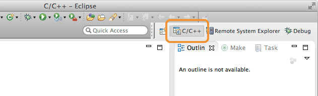
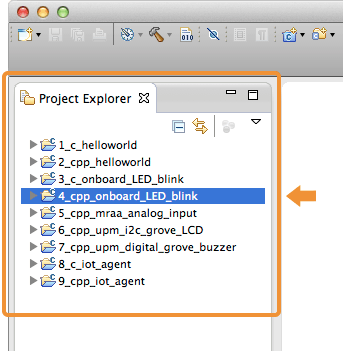
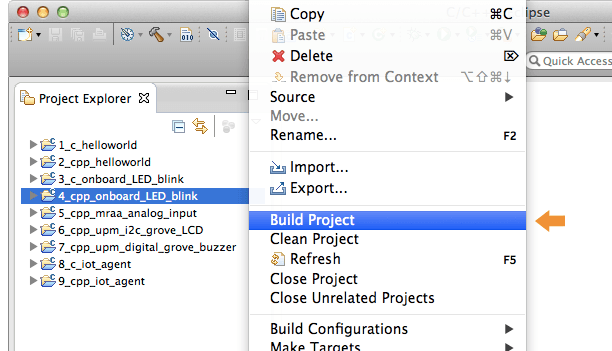
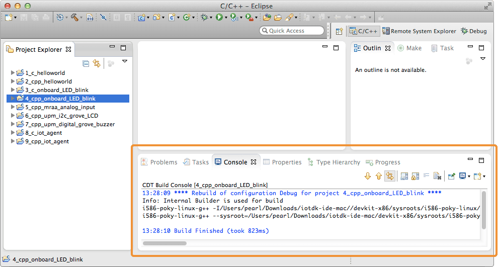
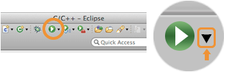
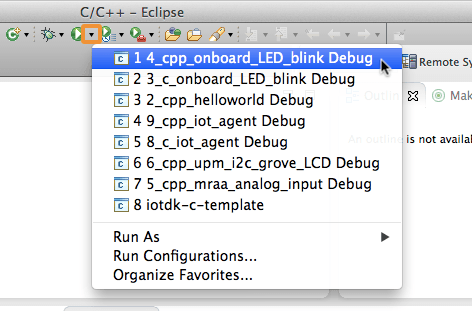
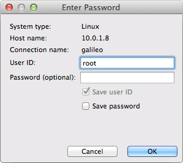
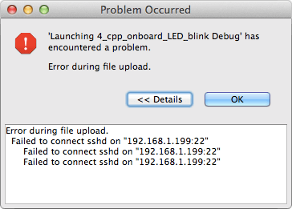
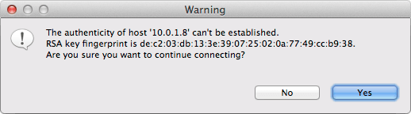
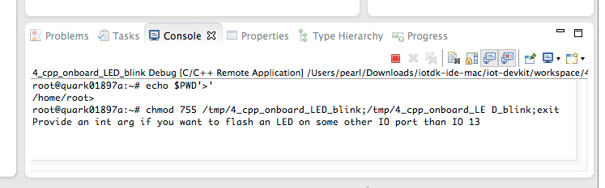

Build and run a sample application
The version of Eclipse distributed with the developer kit has some example projects already built in. To start, build a blinking LED project from a pre-existing sample.
-
If not already selected, click the “C/C++” tab in the top right corner of the Eclipse screen.

-
From the “Project Explorer” panel on the left side, right-click on “4_cpp_onboard_LED_blink”.

-
Then select “Build Project” in the context menu.

-
Wait for the project to finish building for the first time. A message will be displayed in the “Console” panel at the bottom of the Eclipse IDE when done.

-
From the toolbar at the top of the Eclipse IDE, click the little arrow to the right of the Run icon to open the Run drop down menu.

-
Select “4_cpp_onboard_LED_blink Debug”. Note the “Debug” at the end of the project name.

The application list order moves around so “4_cpp_onboard_LED_blink Debug” may appear anywhere in the drop down list. Look carefully.
-
A password dialog will appear. If you have not configured your board with a different user ID and password, enter “root” for the “User ID” and leave the “Password” field empty. Click “OK” when done.

Intel® Edison only: Do you get a “Failed to connect sshd” error message?

If your Intel® Edison is using a WiFi connection, you must have a password set on your board otherwise you will get a SSH connection error. To set a password, connect to your Intel® Edison via a serial connection and run:
configure_edison --password -
The following authentication warning will appear. Click “Yes” to proceed. You should only see this warning once.

-
Your compiled project code will be transferred over to the Intel® Edison’s or Intel® Galileo’s onboard memory and run.
Look in the “Console” panel for any program messages.
